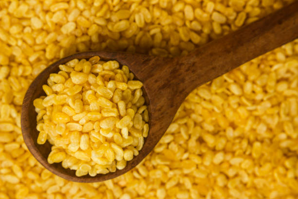
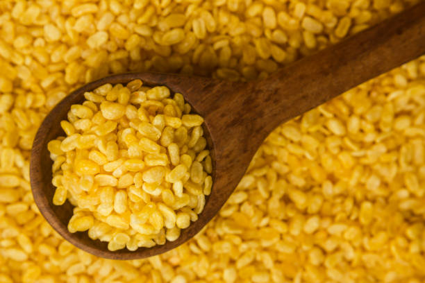
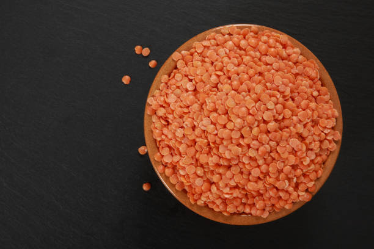

1. MOONG / 1.ਮੂੰਗ
 

Moong, or green gram, is primarily grown in Punjab during the Kharif season (June to September). It thrives in well-drained sandy or loamy soil with a pH of 6.0-7.5. Ideal soil temperatures range from 20°C to 30°C. Nutritionally, it is rich in protein, fiber, and essential vitamins. The cultivation period is about 60-90 days. Resources required include moderate water and fertilizers. Its demand is high in states like Maharashtra, Karnataka, and Uttar Pradesh, where it is also cultivated extensively. Punjab sees significant market share due to local consumption and export potential.
ਮੂੰਗ, ਜਾਂ ਹਰੇ ਛੋਲੇ, ਮੁੱਖ ਤੌਰ 'ਤੇ ਪੰਜਾਬ ਵਿੱਚ ਸਾਉਣੀ ਦੇ ਸੀਜ਼ਨ (ਜੂਨ ਤੋਂ ਸਤੰਬਰ) ਦੌਰਾਨ ਉਗਾਇਆ ਜਾਂਦਾ ਹੈ। ਇਹ 6.0-7.5 ਦੇ pH ਨਾਲ ਚੰਗੀ-ਨਿਕਾਸ ਵਾਲੀ ਰੇਤਲੀ ਜਾਂ ਚਿਕਨਾਈ ਵਾਲੀ ਮਿੱਟੀ ਵਿੱਚ ਉੱਗਦਾ ਹੈ। ਮਿੱਟੀ ਦਾ ਆਦਰਸ਼ ਤਾਪਮਾਨ 20°C ਤੋਂ 30°C ਤੱਕ ਹੁੰਦਾ ਹੈ। ਪੌਸ਼ਟਿਕ ਤੌਰ 'ਤੇ, ਇਹ ਪ੍ਰੋਟੀਨ, ਫਾਈਬਰ ਅਤੇ ਜ਼ਰੂਰੀ ਵਿਟਾਮਿਨਾਂ ਨਾਲ ਭਰਪੂਰ ਹੁੰਦਾ ਹੈ। ਕਾਸ਼ਤ ਦੀ ਮਿਆਦ ਲਗਭਗ 60-90 ਦਿਨ ਹੈ। ਲੋੜੀਂਦੇ ਸਰੋਤਾਂ ਵਿੱਚ ਮੱਧਮ ਪਾਣੀ ਅਤੇ ਖਾਦਾਂ ਸ਼ਾਮਲ ਹਨ। ਮਹਾਰਾਸ਼ਟਰ, ਕਰਨਾਟਕ ਅਤੇ ਉੱਤਰ ਪ੍ਰਦੇਸ਼ ਵਰਗੇ ਰਾਜਾਂ ਵਿੱਚ ਇਸਦੀ ਮੰਗ ਬਹੁਤ ਜ਼ਿਆਦਾ ਹੈ, ਜਿੱਥੇ ਇਸਦੀ ਵੱਡੇ ਪੱਧਰ 'ਤੇ ਕਾਸ਼ਤ ਕੀਤੀ ਜਾਂਦੀ ਹੈ। ਪੰਜਾਬ ਸਥਾਨਕ ਖਪਤ ਅਤੇ ਨਿਰਯਾਤ ਸੰਭਾਵਨਾ ਦੇ ਕਾਰਨ ਮਹੱਤਵਪੂਰਨ ਬਾਜ਼ਾਰ ਹਿੱਸੇਦਾਰੀ ਦੇਖਦਾ ਹੈ।
2. MASOOR / 2.ਦਾਲ

Masoor, or red lentil, is primarily grown in Punjab during the Rabi season (October to March). It is mostly sold and cultivated in states like Madhya Pradesh and Uttar Pradesh, which dominate the market. Masoor prefers well-drained sandy loam or loamy soil with a pH of 6.0-7.5. Ideal soil temperatures range from 20°C to 30°C. It’s rich in protein, fiber, and minerals. The cultivation period is around 90-120 days, requiring moderate water and fertilizers. Demand is particularly high in states like Maharashtra, West Bengal, and Tamil Nadu, driven by its nutritional benefits and culinary versatility.
ਮਸੂਰ, ਜਾਂ ਲਾਲ ਦਾਲ, ਮੁੱਖ ਤੌਰ 'ਤੇ ਪੰਜਾਬ ਵਿੱਚ ਹਾੜੀ ਦੇ ਸੀਜ਼ਨ (ਅਕਤੂਬਰ ਤੋਂ ਮਾਰਚ) ਦੌਰਾਨ ਉਗਾਈ ਜਾਂਦੀ ਹੈ। ਇਹ ਜ਼ਿਆਦਾਤਰ ਮੱਧ ਪ੍ਰਦੇਸ਼ ਅਤੇ ਉੱਤਰ ਪ੍ਰਦੇਸ਼ ਵਰਗੇ ਰਾਜਾਂ ਵਿੱਚ ਵੇਚਿਆ ਅਤੇ ਕਾਸ਼ਤ ਕੀਤਾ ਜਾਂਦਾ ਹੈ, ਜੋ ਕਿ ਮਾਰਕੀਟ ਵਿੱਚ ਹਾਵੀ ਹਨ। ਮਸੂਰ 6.0-7.5 ਦੀ pH ਵਾਲੀ ਰੇਤਲੀ ਦੋਮਟ ਜਾਂ ਲੂਮੀ ਮਿੱਟੀ ਨੂੰ ਤਰਜੀਹ ਦਿੰਦਾ ਹੈ। ਮਿੱਟੀ ਦਾ ਆਦਰਸ਼ ਤਾਪਮਾਨ 20°C ਤੋਂ 30°C ਤੱਕ ਹੁੰਦਾ ਹੈ। ਇਹ ਪ੍ਰੋਟੀਨ, ਫਾਈਬਰ ਅਤੇ ਖਣਿਜਾਂ ਨਾਲ ਭਰਪੂਰ ਹੁੰਦਾ ਹੈ। ਕਾਸ਼ਤ ਦੀ ਮਿਆਦ ਲਗਭਗ 90-120 ਦਿਨ ਹੁੰਦੀ ਹੈ, ਜਿਸ ਨੂੰ ਮੱਧਮ ਪਾਣੀ ਅਤੇ ਖਾਦਾਂ ਦੀ ਲੋੜ ਹੁੰਦੀ ਹੈ। ਮਹਾਰਾਸ਼ਟਰ, ਪੱਛਮੀ ਬੰਗਾਲ ਅਤੇ ਤਾਮਿਲਨਾਡੂ ਵਰਗੇ ਰਾਜਾਂ ਵਿੱਚ ਮੰਗ ਖਾਸ ਤੌਰ 'ਤੇ ਉੱਚੀ ਹੈ, ਜੋ ਕਿ ਇਸਦੇ ਪੌਸ਼ਟਿਕ ਲਾਭਾਂ ਅਤੇ ਰਸੋਈ ਦੀ ਬਹੁਪੱਖੀਤਾ ਦੁਆਰਾ ਚਲਾਇਆ ਜਾਂਦਾ ਹੈ।
3. GRAM / 3.ਗ੍ਰਾਮ

Gram, or chickpeas, is grown in Punjab during the Rabi season (October to March). It is primarily sold and cultivated in states like Madhya Pradesh and Rajasthan, which have a significant market share. Gram prefers well-drained loamy or sandy loam soil with a pH of 6.0-8.0. Ideal soil temperatures range from 20°C to 30°C. Nutritionally, it is high in protein, fiber, and essential minerals. The cultivation period is about 90-120 days, requiring moderate water and fertilizers. Demand is highest in states like Gujarat, Maharashtra, and Tamil Nadu, driven by its versatility in cooking and health benefits.
ਪੰਜਾਬ ਵਿੱਚ ਹਾੜੀ ਦੇ ਸੀਜ਼ਨ (ਅਕਤੂਬਰ ਤੋਂ ਮਾਰਚ) ਦੌਰਾਨ ਛੋਲਿਆਂ ਜਾਂ ਛੋਲਿਆਂ ਦੀ ਕਾਸ਼ਤ ਕੀਤੀ ਜਾਂਦੀ ਹੈ। ਇਹ ਮੁੱਖ ਤੌਰ 'ਤੇ ਮੱਧ ਪ੍ਰਦੇਸ਼ ਅਤੇ ਰਾਜਸਥਾਨ ਵਰਗੇ ਰਾਜਾਂ ਵਿੱਚ ਵੇਚਿਆ ਅਤੇ ਕਾਸ਼ਤ ਕੀਤਾ ਜਾਂਦਾ ਹੈ, ਜਿਨ੍ਹਾਂ ਦੀ ਮਾਰਕੀਟ ਵਿੱਚ ਮਹੱਤਵਪੂਰਨ ਹਿੱਸੇਦਾਰੀ ਹੈ। ਛੋਲੇ 6.0-8.0 ਦੀ pH ਵਾਲੀ ਚੰਗੀ-ਨਿਕਾਸ ਵਾਲੀ ਦੋਮਟ ਜਾਂ ਰੇਤਲੀ ਦੋਮਟ ਮਿੱਟੀ ਨੂੰ ਤਰਜੀਹ ਦਿੰਦੇ ਹਨ। ਮਿੱਟੀ ਦਾ ਆਦਰਸ਼ ਤਾਪਮਾਨ 20°C ਤੋਂ 30°C ਤੱਕ ਹੁੰਦਾ ਹੈ। ਪੌਸ਼ਟਿਕ ਤੌਰ 'ਤੇ, ਇਹ ਪ੍ਰੋਟੀਨ, ਫਾਈਬਰ ਅਤੇ ਜ਼ਰੂਰੀ ਖਣਿਜਾਂ ਨਾਲ ਭਰਪੂਰ ਹੁੰਦਾ ਹੈ। ਕਾਸ਼ਤ ਦੀ ਮਿਆਦ ਲਗਭਗ 90-120 ਦਿਨ ਹੁੰਦੀ ਹੈ, ਜਿਸ ਨੂੰ ਮੱਧਮ ਪਾਣੀ ਅਤੇ ਖਾਦਾਂ ਦੀ ਲੋੜ ਹੁੰਦੀ ਹੈ। ਗੁਜਰਾਤ, ਮਹਾਰਾਸ਼ਟਰ ਅਤੇ ਤਾਮਿਲਨਾਡੂ ਵਰਗੇ ਰਾਜਾਂ ਵਿੱਚ ਮੰਗ ਸਭ ਤੋਂ ਵੱਧ ਹੈ, ਖਾਣਾ ਪਕਾਉਣ ਅਤੇ ਸਿਹਤ ਲਾਭਾਂ ਵਿੱਚ ਇਸਦੀ ਬਹੁਪੱਖੀਤਾ ਦੁਆਰਾ ਚਲਾਇਆ ਜਾਂਦਾ ਹੈ।
4. ARHAR / 4.ਅਰਹਰ


Arhar, or pigeon pea, is primarily grown in Punjab during the Kharif season (June to September). It is mostly sold and cultivated in states like Maharashtra and Karnataka, which dominate the market. Arhar thrives in well-drained sandy or loamy soil with a pH of 6.0-7.5. Ideal soil temperatures range from 25°C to 35°C. Nutritionally, it is rich in protein, fiber, and essential vitamins. The cultivation period is about 160-180 days, requiring moderate water and fertilizers. Demand is particularly high in states like Andhra Pradesh and Tamil Nadu, where it is a staple ingredient in various dishes.
ਅਰਹਰ, ਜਾਂ ਕਬੂਤਰ ਮਟਰ, ਮੁੱਖ ਤੌਰ 'ਤੇ ਪੰਜਾਬ ਵਿੱਚ ਸਾਉਣੀ ਦੇ ਸੀਜ਼ਨ (ਜੂਨ ਤੋਂ ਸਤੰਬਰ) ਦੌਰਾਨ ਉਗਾਇਆ ਜਾਂਦਾ ਹੈ। ਇਹ ਜ਼ਿਆਦਾਤਰ ਮਹਾਰਾਸ਼ਟਰ ਅਤੇ ਕਰਨਾਟਕ ਵਰਗੇ ਰਾਜਾਂ ਵਿੱਚ ਵੇਚਿਆ ਅਤੇ ਕਾਸ਼ਤ ਕੀਤਾ ਜਾਂਦਾ ਹੈ, ਜੋ ਕਿ ਮਾਰਕੀਟ ਵਿੱਚ ਹਾਵੀ ਹਨ। ਅਰਹਰ 6.0-7.5 ਦੀ pH ਵਾਲੀ ਰੇਤਲੀ ਜਾਂ ਚਿਕਨਾਈ ਵਾਲੀ ਮਿੱਟੀ ਵਿੱਚ ਉੱਗਦਾ ਹੈ। ਮਿੱਟੀ ਦਾ ਆਦਰਸ਼ ਤਾਪਮਾਨ 25°C ਤੋਂ 35°C ਤੱਕ ਹੁੰਦਾ ਹੈ। ਪੌਸ਼ਟਿਕ ਤੌਰ 'ਤੇ, ਇਹ ਪ੍ਰੋਟੀਨ, ਫਾਈਬਰ ਅਤੇ ਜ਼ਰੂਰੀ ਵਿਟਾਮਿਨਾਂ ਨਾਲ ਭਰਪੂਰ ਹੁੰਦਾ ਹੈ। ਕਾਸ਼ਤ ਦੀ ਮਿਆਦ ਲਗਭਗ 160-180 ਦਿਨ ਹੈ, ਜਿਸ ਨੂੰ ਮੱਧਮ ਪਾਣੀ ਅਤੇ ਖਾਦਾਂ ਦੀ ਲੋੜ ਹੁੰਦੀ ਹੈ। ਖਾਸ ਤੌਰ 'ਤੇ ਆਂਧਰਾ ਪ੍ਰਦੇਸ਼ ਅਤੇ ਤਾਮਿਲਨਾਡੂ ਵਰਗੇ ਰਾਜਾਂ ਵਿੱਚ ਮੰਗ ਬਹੁਤ ਜ਼ਿਆਦਾ ਹੈ, ਜਿੱਥੇ ਇਹ ਵੱਖ-ਵੱਖ ਪਕਵਾਨਾਂ ਵਿੱਚ ਇੱਕ ਮੁੱਖ ਸਮੱਗਰੀ ਹੈ।
5. MUSTARD / 5.ਸਰ੍ਹੋਂ


Mustard is primarily grown in Punjab during the Rabi season (October to March). It is mostly cultivated and sold in states like Rajasthan and Haryana, which have significant market shares. Mustard prefers well-drained loamy or clayey soil with a pH of 6.0-7.5. Ideal soil temperatures range from 15°C to 25°C. Nutritionally, it is rich in healthy fats, protein, and essential vitamins. The cultivation period is about 90-120 days, requiring moderate water and fertilizers. Demand is highest in states like Uttar Pradesh and Madhya Pradesh, where mustard oil is a key cooking ingredient and used widely in various cuisines.
ਪੰਜਾਬ ਵਿੱਚ ਸਰ੍ਹੋਂ ਦੀ ਕਾਸ਼ਤ ਮੁੱਖ ਤੌਰ 'ਤੇ ਹਾੜੀ ਦੇ ਸੀਜ਼ਨ (ਅਕਤੂਬਰ ਤੋਂ ਮਾਰਚ) ਦੌਰਾਨ ਕੀਤੀ ਜਾਂਦੀ ਹੈ। ਇਹ ਜਿਆਦਾਤਰ ਰਾਜਸਥਾਨ ਅਤੇ ਹਰਿਆਣਾ ਵਰਗੇ ਰਾਜਾਂ ਵਿੱਚ ਕਾਸ਼ਤ ਅਤੇ ਵੇਚਿਆ ਜਾਂਦਾ ਹੈ, ਜਿਸ ਵਿੱਚ ਮਹੱਤਵਪੂਰਨ ਮਾਰਕੀਟ ਸ਼ੇਅਰ ਹਨ। ਸਰ੍ਹੋਂ 6.0-7.5 ਦੀ pH ਵਾਲੀ ਚੰਗੀ ਨਿਕਾਸ ਵਾਲੀ ਦੋਮਟ ਜਾਂ ਮਿੱਟੀ ਵਾਲੀ ਮਿੱਟੀ ਨੂੰ ਤਰਜੀਹ ਦਿੰਦੀ ਹੈ। ਮਿੱਟੀ ਦਾ ਆਦਰਸ਼ ਤਾਪਮਾਨ 15°C ਤੋਂ 25°C ਤੱਕ ਹੁੰਦਾ ਹੈ। ਪੌਸ਼ਟਿਕ ਤੌਰ 'ਤੇ, ਇਹ ਸਿਹਤਮੰਦ ਚਰਬੀ, ਪ੍ਰੋਟੀਨ ਅਤੇ ਜ਼ਰੂਰੀ ਵਿਟਾਮਿਨਾਂ ਨਾਲ ਭਰਪੂਰ ਹੁੰਦਾ ਹੈ। ਕਾਸ਼ਤ ਦੀ ਮਿਆਦ ਲਗਭਗ 90-120 ਦਿਨ ਹੁੰਦੀ ਹੈ, ਜਿਸ ਨੂੰ ਮੱਧਮ ਪਾਣੀ ਅਤੇ ਖਾਦਾਂ ਦੀ ਲੋੜ ਹੁੰਦੀ ਹੈ। ਉੱਤਰ ਪ੍ਰਦੇਸ਼ ਅਤੇ ਮੱਧ ਪ੍ਰਦੇਸ਼ ਵਰਗੇ ਰਾਜਾਂ ਵਿੱਚ ਮੰਗ ਸਭ ਤੋਂ ਵੱਧ ਹੈ, ਜਿੱਥੇ ਸਰ੍ਹੋਂ ਦਾ ਤੇਲ ਇੱਕ ਮੁੱਖ ਰਸੋਈ ਸਮੱਗਰੀ ਹੈ ਅਤੇ ਵੱਖ-ਵੱਖ ਪਕਵਾਨਾਂ ਵਿੱਚ ਵਿਆਪਕ ਤੌਰ 'ਤੇ ਵਰਤਿਆ ਜਾਂਦਾ ਹੈ।
6. RAPESEED / 6.ਰੇਪਸੀਡ
Rapeseed is primarily grown in Punjab during the Rabi season (October to March). It is predominantly cultivated and sold in states like Haryana and Madhya Pradesh, which have significant market shares. Rapeseed thrives in well-drained loamy or clayey soil with a pH of 6.0-7.5. Ideal soil temperatures range from 10°C to 20°C. Nutritionally, it is high in healthy fats, protein, and essential vitamins. The cultivation period is about 90-120 days, requiring moderate water and fertilizers. Demand is particularly high in states like Uttar Pradesh and Gujarat, where rapeseed oil is widely used in cooking and food processing.
ਰੇਪਸੀਡ ਮੁੱਖ ਤੌਰ 'ਤੇ ਪੰਜਾਬ ਵਿੱਚ ਹਾੜੀ ਦੇ ਸੀਜ਼ਨ (ਅਕਤੂਬਰ ਤੋਂ ਮਾਰਚ) ਦੌਰਾਨ ਉਗਾਇਆ ਜਾਂਦਾ ਹੈ। ਇਹ ਮੁੱਖ ਤੌਰ 'ਤੇ ਹਰਿਆਣਾ ਅਤੇ ਮੱਧ ਪ੍ਰਦੇਸ਼ ਵਰਗੇ ਰਾਜਾਂ ਵਿੱਚ ਕਾਸ਼ਤ ਅਤੇ ਵੇਚਿਆ ਜਾਂਦਾ ਹੈ, ਜਿਨ੍ਹਾਂ ਕੋਲ ਮਹੱਤਵਪੂਰਨ ਮਾਰਕੀਟ ਸ਼ੇਅਰ ਹਨ। ਰੇਪਸੀਡ 6.0-7.5 ਦੀ pH ਵਾਲੀ ਚੰਗੀ ਨਿਕਾਸ ਵਾਲੀ ਦੁਮਟੀਆ ਜਾਂ ਮਿੱਟੀ ਵਾਲੀ ਮਿੱਟੀ ਵਿੱਚ ਵਧਦੀ ਹੈ। ਮਿੱਟੀ ਦਾ ਆਦਰਸ਼ ਤਾਪਮਾਨ 10°C ਤੋਂ 20°C ਤੱਕ ਹੁੰਦਾ ਹੈ। ਪੌਸ਼ਟਿਕ ਤੌਰ 'ਤੇ, ਇਹ ਸਿਹਤਮੰਦ ਚਰਬੀ, ਪ੍ਰੋਟੀਨ ਅਤੇ ਜ਼ਰੂਰੀ ਵਿਟਾਮਿਨਾਂ ਵਿੱਚ ਉੱਚਾ ਹੁੰਦਾ ਹੈ। ਕਾਸ਼ਤ ਦੀ ਮਿਆਦ ਲਗਭਗ 90-120 ਦਿਨ ਹੁੰਦੀ ਹੈ, ਜਿਸ ਨੂੰ ਮੱਧਮ ਪਾਣੀ ਅਤੇ ਖਾਦਾਂ ਦੀ ਲੋੜ ਹੁੰਦੀ ਹੈ। ਖਾਸ ਤੌਰ 'ਤੇ ਉੱਤਰ ਪ੍ਰਦੇਸ਼ ਅਤੇ ਗੁਜਰਾਤ ਵਰਗੇ ਰਾਜਾਂ ਵਿੱਚ ਮੰਗ ਬਹੁਤ ਜ਼ਿਆਦਾ ਹੈ, ਜਿੱਥੇ ਰੈਪਸੀਡ ਤੇਲ ਦੀ ਵਰਤੋਂ ਰਸੋਈ ਅਤੇ ਫੂਡ ਪ੍ਰੋਸੈਸਿੰਗ ਵਿੱਚ ਵਿਆਪਕ ਤੌਰ 'ਤੇ ਕੀਤੀ ਜਾਂਦੀ ਹੈ।
7. SOYBEAN / 7.ਸੋਇਆਬੀਨ


Soybean is grown in Punjab during the Kharif season (June to September). It is primarily cultivated and sold in states like Madhya Pradesh and Maharashtra, which have significant market shares. Soybean thrives in well-drained, loamy or sandy soil with a pH of 6.0-7.0. Ideal soil temperatures range from 20°C to 30°C. Nutritionally, it is high in protein, healthy fats, and fiber. The cultivation period is about 90-120 days, requiring moderate water and fertilizers. Demand is highest in states like Gujarat and Uttar Pradesh, where soybean oil and meal are essential for cooking and animal feed.
ਪੰਜਾਬ ਵਿੱਚ ਸਾਉਣੀ ਦੇ ਸੀਜ਼ਨ (ਜੂਨ ਤੋਂ ਸਤੰਬਰ) ਦੌਰਾਨ ਸੋਇਆਬੀਨ ਦੀ ਕਾਸ਼ਤ ਕੀਤੀ ਜਾਂਦੀ ਹੈ। ਇਹ ਮੁੱਖ ਤੌਰ 'ਤੇ ਮੱਧ ਪ੍ਰਦੇਸ਼ ਅਤੇ ਮਹਾਰਾਸ਼ਟਰ ਵਰਗੇ ਰਾਜਾਂ ਵਿੱਚ ਕਾਸ਼ਤ ਅਤੇ ਵੇਚਿਆ ਜਾਂਦਾ ਹੈ, ਜਿਨ੍ਹਾਂ ਕੋਲ ਮਹੱਤਵਪੂਰਨ ਮਾਰਕੀਟ ਸ਼ੇਅਰ ਹਨ। ਸੋਇਆਬੀਨ 6.0-7.0 ਦੀ pH ਵਾਲੀ ਚੰਗੀ ਨਿਕਾਸ ਵਾਲੀ, ਦੁਮਟੀਆ ਜਾਂ ਰੇਤਲੀ ਮਿੱਟੀ ਵਿੱਚ ਵਧਦੀ ਹੈ। ਮਿੱਟੀ ਦਾ ਆਦਰਸ਼ ਤਾਪਮਾਨ 20°C ਤੋਂ 30°C ਤੱਕ ਹੁੰਦਾ ਹੈ। ਪੌਸ਼ਟਿਕ ਤੌਰ 'ਤੇ, ਇਸ ਵਿੱਚ ਪ੍ਰੋਟੀਨ, ਸਿਹਤਮੰਦ ਚਰਬੀ ਅਤੇ ਫਾਈਬਰ ਦੀ ਮਾਤਰਾ ਵਧੇਰੇ ਹੁੰਦੀ ਹੈ। ਕਾਸ਼ਤ ਦੀ ਮਿਆਦ ਲਗਭਗ 90-120 ਦਿਨ ਹੁੰਦੀ ਹੈ, ਜਿਸ ਨੂੰ ਮੱਧਮ ਪਾਣੀ ਅਤੇ ਖਾਦਾਂ ਦੀ ਲੋੜ ਹੁੰਦੀ ਹੈ। ਗੁਜਰਾਤ ਅਤੇ ਉੱਤਰ ਪ੍ਰਦੇਸ਼ ਵਰਗੇ ਰਾਜਾਂ ਵਿੱਚ ਮੰਗ ਸਭ ਤੋਂ ਵੱਧ ਹੈ, ਜਿੱਥੇ ਸੋਇਆਬੀਨ ਦਾ ਤੇਲ ਅਤੇ ਭੋਜਨ ਖਾਣਾ ਬਣਾਉਣ ਅਤੇ ਜਾਨਵਰਾਂ ਦੇ ਚਾਰੇ ਲਈ ਜ਼ਰੂਰੀ ਹਨ।
8. COTTON / 8.ਕਪਾਹ


Cotton is primarily grown in Punjab during the Kharif season (April to October). It is mostly cultivated and sold in states like Gujarat and Maharashtra, which have significant market shares. Cotton thrives in well-drained, fertile loamy or sandy soil with a pH of 6.0-7.5. Ideal soil temperatures range from 20°C to 30°C. While cotton is not consumed directly, it supports the textile industry. The cultivation period is about 180-210 days, requiring substantial water and fertilizers. Demand is highest in states like Tamil Nadu and Karnataka, where cotton is essential for fabric production and apparel manufacturing.
ਕਪਾਹ ਮੁੱਖ ਤੌਰ 'ਤੇ ਪੰਜਾਬ ਵਿੱਚ ਸਾਉਣੀ ਦੇ ਸੀਜ਼ਨ (ਅਪ੍ਰੈਲ ਤੋਂ ਅਕਤੂਬਰ) ਦੌਰਾਨ ਉਗਾਈ ਜਾਂਦੀ ਹੈ। ਇਹ ਜਿਆਦਾਤਰ ਗੁਜਰਾਤ ਅਤੇ ਮਹਾਰਾਸ਼ਟਰ ਵਰਗੇ ਰਾਜਾਂ ਵਿੱਚ ਕਾਸ਼ਤ ਅਤੇ ਵੇਚਿਆ ਜਾਂਦਾ ਹੈ, ਜਿਸ ਵਿੱਚ ਮਹੱਤਵਪੂਰਨ ਮਾਰਕੀਟ ਸ਼ੇਅਰ ਹਨ। ਕਪਾਹ 6.0-7.5 ਦੀ pH ਵਾਲੀ ਚੰਗੀ ਨਿਕਾਸ ਵਾਲੀ, ਉਪਜਾਊ ਲੋਮੀ ਜਾਂ ਰੇਤਲੀ ਮਿੱਟੀ ਵਿੱਚ ਵਧਦੀ ਹੈ। ਮਿੱਟੀ ਦਾ ਆਦਰਸ਼ ਤਾਪਮਾਨ 20°C ਤੋਂ 30°C ਤੱਕ ਹੁੰਦਾ ਹੈ। ਜਦੋਂ ਕਿ ਕਪਾਹ ਦੀ ਸਿੱਧੀ ਖਪਤ ਨਹੀਂ ਕੀਤੀ ਜਾਂਦੀ, ਇਹ ਟੈਕਸਟਾਈਲ ਉਦਯੋਗ ਨੂੰ ਸਮਰਥਨ ਦਿੰਦੀ ਹੈ। ਕਾਸ਼ਤ ਦੀ ਮਿਆਦ ਲਗਭਗ 180-210 ਦਿਨ ਹੁੰਦੀ ਹੈ, ਜਿਸ ਲਈ ਕਾਫ਼ੀ ਪਾਣੀ ਅਤੇ ਖਾਦਾਂ ਦੀ ਲੋੜ ਹੁੰਦੀ ਹੈ। ਤਾਮਿਲਨਾਡੂ ਅਤੇ ਕਰਨਾਟਕ ਵਰਗੇ ਰਾਜਾਂ ਵਿੱਚ ਮੰਗ ਸਭ ਤੋਂ ਵੱਧ ਹੈ, ਜਿੱਥੇ ਕਪਾਹ ਫੈਬਰਿਕ ਉਤਪਾਦਨ ਅਤੇ ਲਿਬਾਸ ਨਿਰਮਾਣ ਲਈ ਜ਼ਰੂਰੀ ਹੈ।
9. SUGARCANE / 9.ਖੰਡ


Sugarcane is grown in Punjab primarily during the Kharif season (April to October). It is mainly cultivated and sold in states like Uttar Pradesh and Maharashtra, which dominate the market. Sugarcane prefers well-drained, loamy or sandy soil with a pH of 6.0-8.0. Ideal soil temperatures range from 20°C to 30°C. Nutritionally, it is rich in carbohydrates and provides energy. The cultivation period is about 12-18 months, requiring substantial water and fertilizers. Demand is particularly high in states like Maharashtra and Karnataka, where sugar and its by-products are essential for the food and beverage industries.
ਪੰਜਾਬ ਵਿੱਚ ਗੰਨਾ ਮੁੱਖ ਤੌਰ 'ਤੇ ਸਾਉਣੀ ਦੇ ਸੀਜ਼ਨ (ਅਪ੍ਰੈਲ ਤੋਂ ਅਕਤੂਬਰ) ਦੌਰਾਨ ਉਗਾਇਆ ਜਾਂਦਾ ਹੈ। ਇਹ ਮੁੱਖ ਤੌਰ 'ਤੇ ਉੱਤਰ ਪ੍ਰਦੇਸ਼ ਅਤੇ ਮਹਾਰਾਸ਼ਟਰ ਵਰਗੇ ਰਾਜਾਂ ਵਿੱਚ ਕਾਸ਼ਤ ਅਤੇ ਵੇਚਿਆ ਜਾਂਦਾ ਹੈ, ਜੋ ਬਾਜ਼ਾਰ ਵਿੱਚ ਹਾਵੀ ਹਨ। ਗੰਨਾ 6.0-8.0 ਦੀ pH ਵਾਲੀ ਚੰਗੀ ਨਿਕਾਸ ਵਾਲੀ, ਦੁਮਟੀਆ ਜਾਂ ਰੇਤਲੀ ਮਿੱਟੀ ਨੂੰ ਤਰਜੀਹ ਦਿੰਦਾ ਹੈ। ਮਿੱਟੀ ਦਾ ਆਦਰਸ਼ ਤਾਪਮਾਨ 20°C ਤੋਂ 30°C ਤੱਕ ਹੁੰਦਾ ਹੈ। ਪੌਸ਼ਟਿਕ ਤੌਰ 'ਤੇ, ਇਹ ਕਾਰਬੋਹਾਈਡਰੇਟ ਨਾਲ ਭਰਪੂਰ ਹੁੰਦਾ ਹੈ ਅਤੇ ਊਰਜਾ ਪ੍ਰਦਾਨ ਕਰਦਾ ਹੈ। ਕਾਸ਼ਤ ਦੀ ਮਿਆਦ ਲਗਭਗ 12-18 ਮਹੀਨੇ ਹੁੰਦੀ ਹੈ, ਜਿਸ ਲਈ ਕਾਫ਼ੀ ਪਾਣੀ ਅਤੇ ਖਾਦਾਂ ਦੀ ਲੋੜ ਹੁੰਦੀ ਹੈ। ਮਹਾਰਾਸ਼ਟਰ ਅਤੇ ਕਰਨਾਟਕ ਵਰਗੇ ਰਾਜਾਂ ਵਿੱਚ ਮੰਗ ਖਾਸ ਤੌਰ 'ਤੇ ਉੱਚੀ ਹੈ, ਜਿੱਥੇ ਖੰਡ ਅਤੇ ਇਸਦੇ ਉਪ-ਉਤਪਾਦ ਭੋਜਨ ਅਤੇ ਪੀਣ ਵਾਲੇ ਉਦਯੋਗਾਂ ਲਈ ਜ਼ਰੂਰੀ ਹਨ।